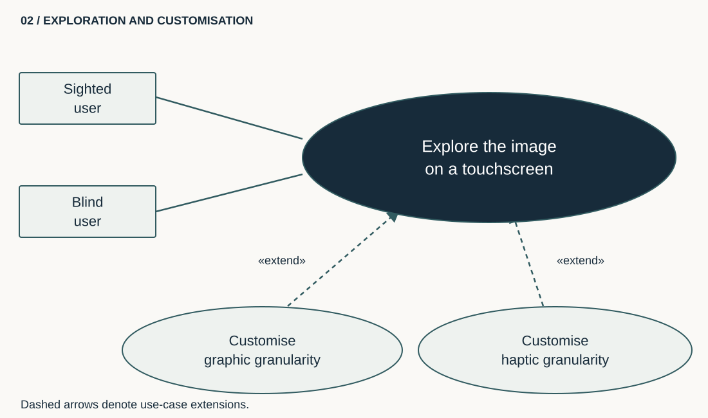
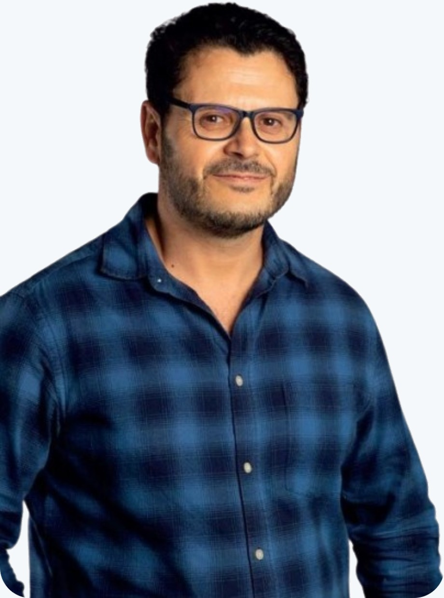

Exploring an image at different levels of detail
An adapted representation can change how an image is explored. In this work, graphic and haptic granularity can be customised for touchscreen exploration by sighted or blind users.

Université Paris 8 · CHArt / THIM · CNU 61
I study how images, interfaces and artificial intelligence models can be adapted to their users’ abilities. My research combines digital accessibility, signal processing and human–computer interaction.

An adapted representation can change how an image is explored. In this work, graphic and haptic granularity can be customised for touchscreen exploration by sighted or blind users.

I study multi-level visual, interactive and tactile representations to make images and digital documents more accessible.
Methods and work in area 1This work combines visual cues and physiological measures to study fatigue using machine learning.
Methods and work in area 2I explore natural and synthetic data augmentation for physical-action classification using deep learning.
Methods and work in area 3Y. Gordienko, N. Gordienko, V. Taran, A. Rojbi, S. Telenyk & S. Stirenko.
S. Rojbi, M. Gouider & A. Rojbi.
In the MIASHS Master’s programme, students work with non-profit organisations from needs analysis through testing and delivery. I connect these projects with courses in accessible web development.
Courses and student projectsMy collaborations cover university mobility, education and tactile adaptation of digital documents. Project descriptions specify the periods, partners and my role.
Projects and academic cooperation